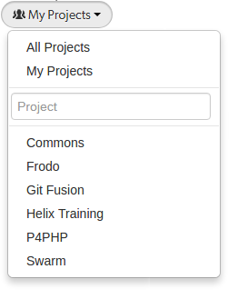
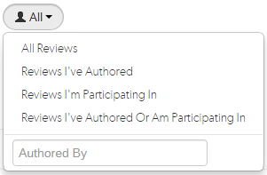
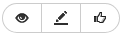
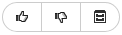
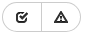
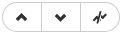
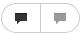

|

|
The code review list helps you keep track of code reviews that:
To see all available reviews, click the Reviews link in the main toolbar.
The Reviews page lists open and closed reviews for all projects in the Helix server.
The Opened and Closed tabs display:
Each review displays the following information:
Created: Reviews sorted by when they were created
Last activity: Reviews sorted by when they were last updated
Hover your mouse over any of the icons to see tooltips.
Projects and Groups have their own review lists that display reviews created by their members.
The following filtering options are available for code reviews:
Project: a dropdown menu that lets you filter which reviews to display based on project:

Users: a dropdown menu that lets you filter which reviews to display based on user involvement:

Specific User: An auto-complete search field that allows you to choose one of the user accounts defined in the Helix server. Once specified, only reviews authored by the user are displayed. Click the X button to remove a userid after it has been specified.
When you select one of the available options, the list of options updates to match the currently selected filter, and the Users dropdown indicates the current filter: All, Author, Participant, or userid.
Review state, (Opened tab only):

Review state, (Closed tab only):

Approved: the review's changes have been approved, and should be committed.Rejected: the review's changes have been rejected.Archived: the review's changes have been put aside.Test status:

Vote status:

Filters for voting only apply to reviews which you are a participant of. Commenting on or voting on a review will automatically add you as a participant. If you leave the review after commenting on it, then this review will not be included in the list.
Comment status:

Filters for commenting only apply to reviews which you are a participant of. Commenting on or voting on a review will automatically add you as a participant. If you leave the review after commenting on it, then this review will not be included in the list.
Swarm updates the URL in your browser to reflect filtering options. This makes it easy to bookmark or share review list URLs. Swarm maintains the current filtering if you click on a review link and then use your browser's back button to return to the review list.
| |
|